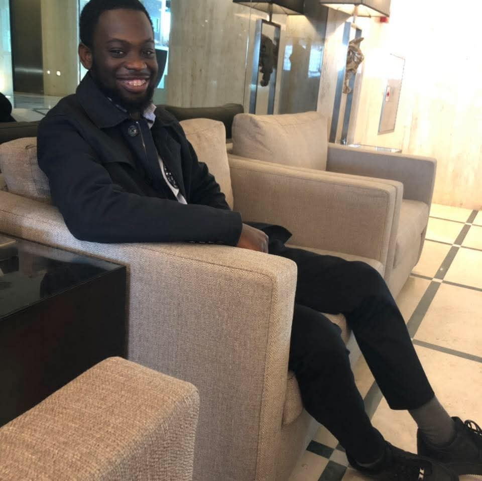

É sempre desafiador escrever para quem gostamos, as ideias fogem e ficamos sem saber o que dizer, mas é algo que vale a pena fazer.
O teu dia chegou, e junto dele a oportunidade de crescer mais ainda. Um homem de imensas qualidades que numa primeira vista aparenta ser bastante fechado para novas amizades, mas não é bem assim, é dono de um coração enorme, respeitoso e humilde, com um espírito de partilha invejável.
Tu és alguém que reclama pouco das adversidades que acontecem a tua volta, preferindo arranjar soluções para poder lidar com elas ou ajustar as expectativas para poder ter uma vida mais leve e com menos ansiedade, o jovem do bodão "É o que temos" . Desejo o universo inteiro de coisas boas para ti, adoro a tua forma divertida de ver e viver a vida, mas sem deixar de lado o que é mais importante, os estudos. Um orgulho é o que tu és, para a tua família e admito que para mim também. E se alguém nunca te disse antes, eu faço questão de dizer que tu és MUITÍSSIMO IMPORTANTE E NECESSÉRIO para mim e para a tua família de certeza. Contudo, muitos PARABÉNS a ti, aproveita bastante este dia com os teus, que Deus te abençoe hoje e sempre. Não sei se terá boda, mas que o bolo seja tão gostoso quanto você.
Nota: eu não sei quantos anos tinhas na foto abaixo, mas por estares um fofinho foi a que eu escolhi.
